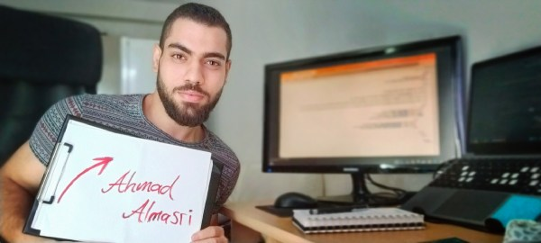

My name is Ahmad Almasri, and I studied Biology at the Faculty of Science at Damascus University. Unfortunately, I couldn’t complete my degree due to the circumstances my country has been through, but my passion for learning remains strong. I have a wide range of interests, and one of my biggest passions is web development. I’m continuously working on improving my skills and learning more about building websites and exploring the world of programming.